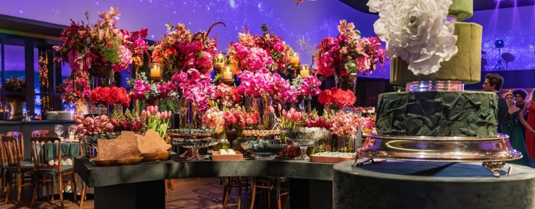

Welcome to The Great British Bee Society! We are a passionate bee charity dedicated to protecting and preserving bee populations across the United Kingdom and beyond.
This is Jane Doe
Our story began in the picturesque village of Castle Combe, nestled in the idyllic countryside of Wiltshire. It was here that our founder, Jane Doe, a dedicated gardener and environmental enthusiast, witnessed the declining numbers of bees and felt compelled to take action.
Jane's vision led to the establishment of The Great British Bee Society, a humble initiative that aimed to raise awareness about the crucial role bees play in our ecosystem. With the support of the Castle Combe community, we started organizing educational workshops, spreading knowledge about the importance of bees and inspiring individuals to make a difference.

The vision began to bloom...
As time went on, our society grew in both size and influence. We expanded our focus beyond awareness and education, collaborating with scientists, beekeepers, and environmental organizations to undertake research and conservation projects. Together, we developed innovative solutions to combat the challenges bees face, including habitat loss, pesticide use, and climate change.
One of our proudest accomplishments has been the creation of bee-friendly gardens across Britain. Through our nationwide campaign, we encourage gardeners of all levels to cultivate pollinator-friendly flowers and avoid harmful pesticides. By partnering with local councils, schools, and corporations, we have transformed barren landscapes into thriving havens for bees and other pollinators.
We also recognize the vital role of beekeepers in maintaining healthy bee populations. That's why we offer grants and scholarships to aspiring beekeepers, fostering a community passionate about beekeeping and supporting responsible practices. We collaborate with beekeepers, sharing knowledge and resources to ensure the well-being of these incredible creatures.
Where are we now?
In 2023, as we celebrate our 5th anniversary, The Great British Bee Society stands as a prominent voice for bee conservation in the United Kingdom. Our dedication and unwavering support have led to policy changes and significant impact. However, our work is far from over.
Looking ahead, we continue to collaborate with scientists, advocate for sustainable agricultural practices, and engage communities nationwide. Our mission is to inspire people globally to protect and cherish bees, fostering a sustainable future for these remarkable creatures and the ecosystems they support.